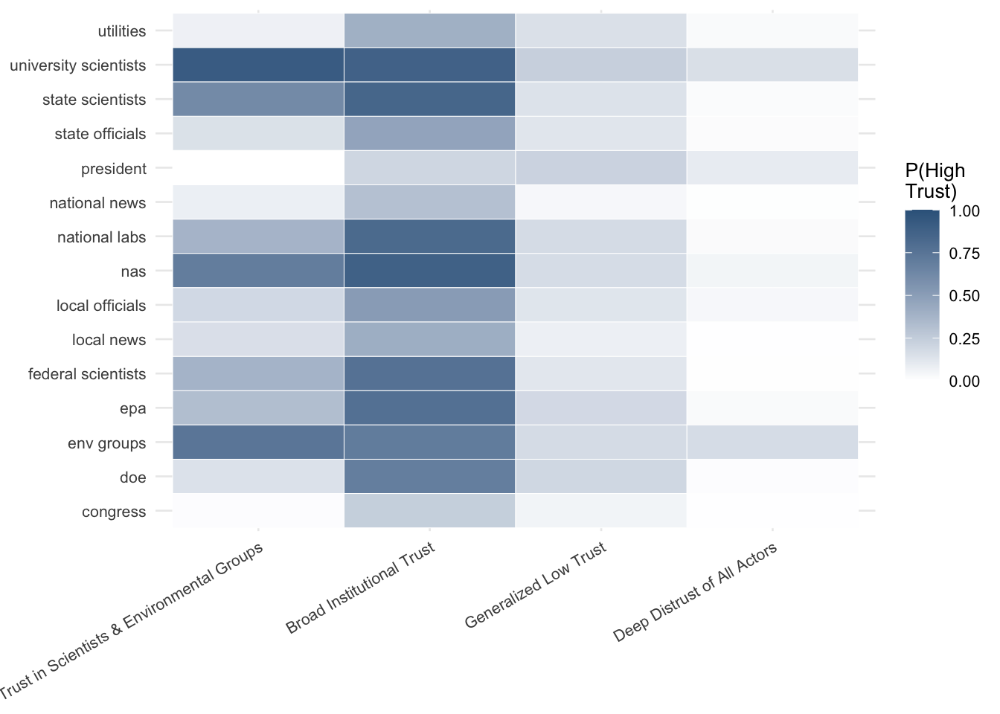

| Classes (k) | BIC | AIC | Log-Likelihood | Entropy | Smallest Class (%) |
|---|---|---|---|---|---|
| 2 | 84724.8 | 84356.2 | -42117.1 | 0.854 | 39.9 |
| 3 | 81829.3 | 81273.3 | -40544.6 | 0.851 | 14.1 |
| 4 | 79640.5 | 78897.1 | -39325.6 | 0.853 | 15.5 |
| 5 | 78886.7 | 77956.0 | -38824.0 | 0.847 | 9.2 |
| 6 | 78283.5 | 77165.5 | -38397.7 | 0.845 | 8.7 |
| 7 | 77872.1 | 76566.7 | -38067.4 | 0.832 | 8.5 |
| 8 | 77598.0 | 76105.3 | -37805.7 | 0.835 | 7.5 |
| 9 | 77380.7 | 75700.7 | -37572.3 | 0.836 | 6.3 |
Who Does the Public Trust on Energy Issues?
Introduction
In this paper, I examine the patterns of whom the US public trusts with regard to energy policy. Specifically, I use Latent Class Analysis (LCA) to demonstrate those patterns. Next, I examine how demographics and political beliefs are associated with specific classes of trust who are highly trusted. Finally, I explore if demographics, political beliefs, and classes of trusted actors are associated with concern regarding several energy policy issues.
Public Trust in Policy Actors
Data and Methods
Latent Class Analysis
Results
| Class | N | Percent |
|---|---|---|
| Trust in Scientists & Environmental Groups | 1035 | 33.2 |
| Broad Institutional Trust | 824 | 26.5 |
| Generalized Low Trust | 770 | 24.7 |
| Deep Distrust of All Actors | 484 | 15.5 |

| Broad Institutional Trust (26.5%) | Generalized Low Trust (24.7%) | Deep Distrust of All Actors (15.5%) | |
|---|---|---|---|
| (Intercept) | -1.991*** | -1.331*** | -0.813** |
| (0.290) | (0.282) | (0.296) | |
| age | 0.007* | 0.008* | 0.004 |
| (0.003) | (0.004) | (0.004) | |
| male | 0.109 | -0.205† | -0.179 |
| (0.108) | (0.113) | (0.125) | |
| white | -0.425*** | -0.450*** | -0.186 |
| (0.118) | (0.124) | (0.138) | |
| college | -0.034 | -0.234† | -0.387** |
| (0.114) | (0.122) | (0.137) | |
| inc | 0.003 | -0.055* | -0.086*** |
| (0.021) | (0.023) | (0.026) | |
| democrat | 0.304 | -0.657*** | -1.247*** |
| (0.205) | (0.193) | (0.203) | |
| republican | 0.693** | 0.495* | 0.351 |
| (0.235) | (0.218) | (0.224) | |
| trump.approval | 0.933*** | 1.083*** | 0.857*** |
| (0.079) | (0.079) | (0.082) | |
| Num.Obs. | 3113 | ||
| R2 | 0.125 | ||
| R2 Adj. | 0.119 | ||
| AIC | 7510.4 | ||
| BIC | 7673.6 | ||
| RMSE | 0.40 | ||
| † p < 0.1, * p < 0.05, ** p < 0.01, *** p < 0.001 | |||
| Concern about Pollution | |
|---|---|
| (Intercept) | 7.856*** |
| (0.266) | |
| age | 0.004 |
| (0.004) | |
| male | -0.516*** |
| (0.112) | |
| white | -0.124 |
| (0.123) | |
| college | 0.224* |
| (0.109) | |
| inc | -0.034 |
| (0.021) | |
| democrat | 0.082 |
| (0.164) | |
| republican | -0.831*** |
| (0.198) | |
| trump.approval | -0.312*** |
| (0.065) | |
| trust_classBroad Institutional Trust | 0.118 |
| (0.137) | |
| trust_classGeneralized Low Trust | -0.835*** |
| (0.153) | |
| trust_classDeep Distrust of All Actors | -1.287*** |
| (0.199) | |
| Num.Obs. | 3113 |
| R2 | 0.194 |
| R2 Adj. | 0.191 |
| AIC | 15144.8 |
| BIC | 15223.4 |
| RMSE | 2.42 |
| † p < 0.1, * p < 0.05, ** p < 0.01, *** p < 0.001 | |